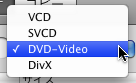
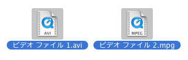
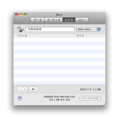
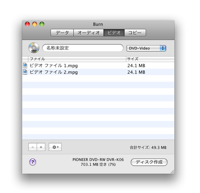
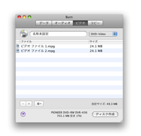
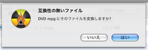

ビデオディスクの作成:
Burnは4つのタイプのビデオディスクを作成することができます。VCDは最初のビデオディスクのフォーマットです。その後に、より高い解像度を持っているSVCDが現れました。それから後に、現在デジタルビデオを配布する一般的な方法であるDVDビデオディスクは現れました。多くの近代的なDVDプレーヤーがDivXディスクを再生できます。この形式はインターネットで特にポピュラーです。DivXファイルは、MPEG2(DVDビデオディスクの上で使用される)よりはるかにたいていの場合小さいです。
1 フォーマットを選択する
ポップアップボタンを使ってフォーマットを選択します。あなたのプレーヤーでどのビデオディスク・フォーマットがサポートされているのか知ることが重要です。何がサポートされているのかを知る為にあなたのマニュアルまたはプレーヤーをチェックしてください。

2 ビデオファイルを幾つか選択します
幾つかのビデオファイルとを選択します。大部分のフォーマットがサポートされています。
注意: 保護されたQuickTimeファイルはサポートされません。

3 それらをリストにドロップします:
選択したファイルをリストにドロップします。ファイルが正しい形式ならば追加されます。もし正しくなければBurnはそれらを変換するかどうかを尋ねます。
 


4 ディスク作成ボタンをクリックします
ダイアログが表示されます。

5 オプションを選択します
ディスク作成時のオプションを選択します。更に多くの設定についてはBurnのメインメニュー「環境設定」を見てください。

6 ディスク作成
ディスクを作成する為に「ディスク作成」ボタンをクリックします。

7 Burn
はディスクを作成します
ディスク作成中にBurnは作成中の状態についてのダイアログを表示します。